The Floorplan

A home designed for connection, comfort and effortless indoor–outdoor living
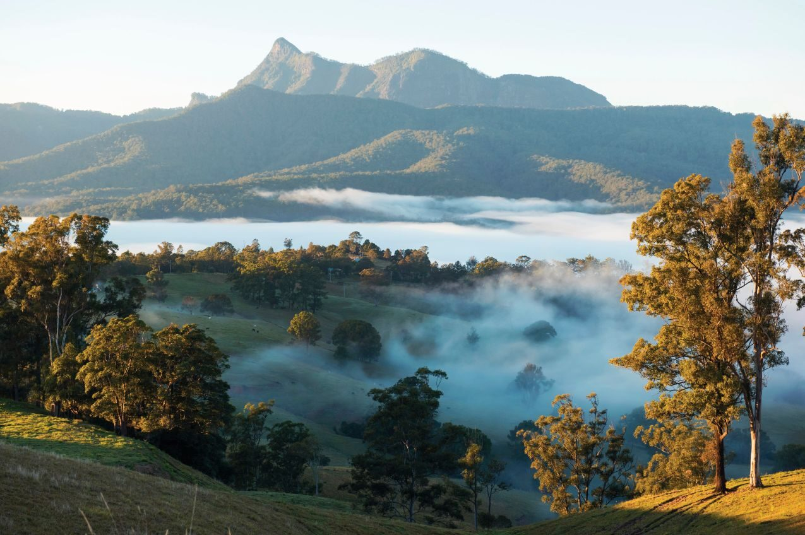
Tweed Valley Hinterland
Mountain of Light
Information Memorandum
The Story
Some places leave an impression.
Others leave a feeling.
Serra Luma did both.
I remember crossing the bridge and following the sealed driveway as it climbed gently through the forest. Birdsong echoed through the trees. Sunlight filtered through the canopy. With every turn, the outside world seemed a little further away.
Then the driveway curved.
The forest opened.
The ridgeline revealed itself.
It was breathtaking.
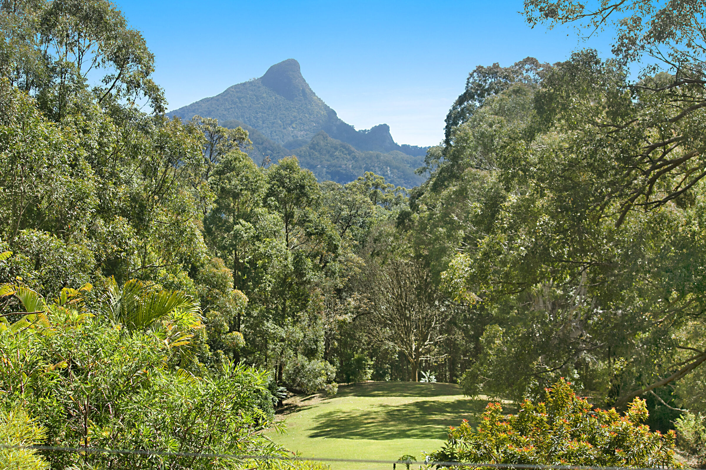
Manicured lawns rolled out before me. Native gardens framed the home, and beyond them the valleys stretched towards the horizon. The sense of space was unlike anything I had experienced before.
I found myself standing there in complete silence, taking it all in.
For the first time in a long time, my mind was still.
I wasn't thinking about where I needed to be next.
I was simply grateful to be exactly where I was.
That feeling has never left me.
The Rare Combination
Many remarkable properties excel in one, two or perhaps three areas.
Protected panoramic views.
Complete privacy.
Thoughtful architecture.
Permanent creek frontage.
Established infrastructure.
Productive land.
Extensive native forest.
Abundant birdlife and wildlife.
A separate multi-acre future building envelope.*
Finding one of these qualities is fortunate. Finding them all within a single estate is exceptionally rare.
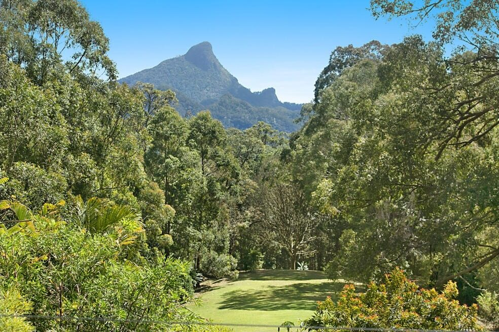
Peace
Peace has its own rhythm.
It arrives with the first light filtering through the forest as the valley slowly awakens.
With coffee on the veranda as the morning sun reaches the ridgeline and the day begins without urgency.
With slow walks through established gardens alive with native flowers, butterflies and birds, each season bringing something new into bloom.
With an afternoon spent wandering to Chowan Creek, listening to the water flowing beneath the canopy before returning home as the light begins to soften.
As evening falls, the sun slips quietly behind Mt Warning (Wollumbin), bathing the valleys in golden light before the stars reclaim the night sky.
Days unfold a little more gently here.
And before long, so do you.
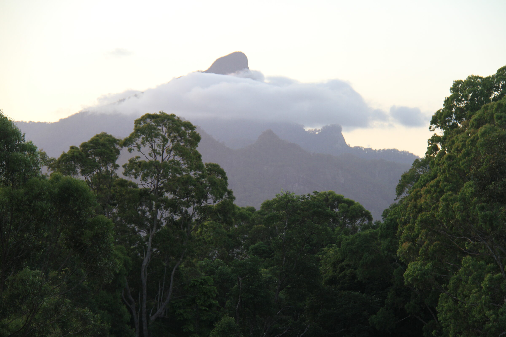
The sun slips quietly behind Mt Warning.
Freedom
Freedom begins with space.
One hundred and thirty-four acres where the day unfolds at its own pace. Gardens to enjoy. A creek to explore. Forest tracks to wander. Open lawns where children disappear into adventure and return with muddy feet, curious minds and stories to tell.
Here, weekends no longer need a plan.
The land becomes the destination.
The seasons become the calendar.
Life begins to unfold at its own pace.
One that leaves room to think.
Room to create.
Room to gather.
Room to simply be.
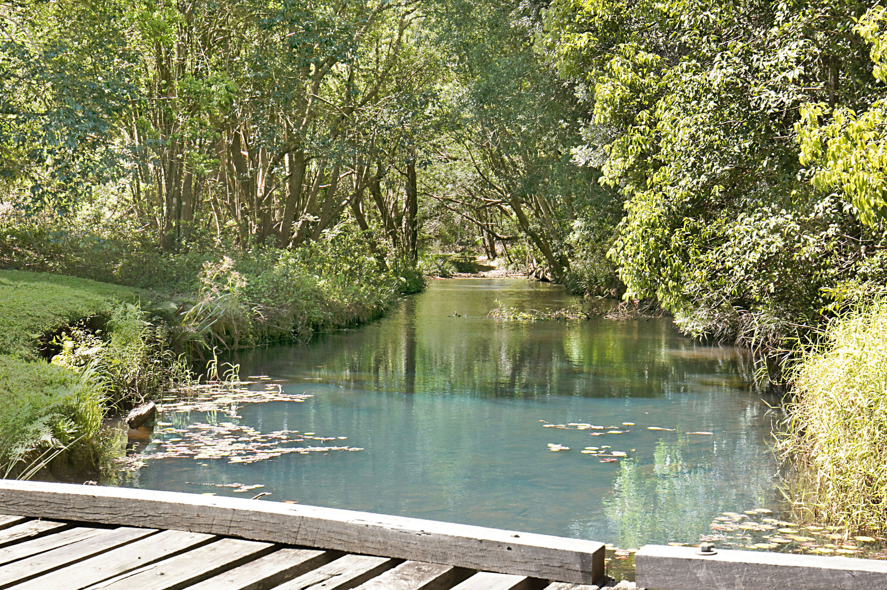
Somewhere along the way, the mind grows quieter.
The shoulders soften.
A deeper breath arrives without asking.
Freedom has a way of changing what feels important.
Success is no longer measured by what has been built.
But by the life it now makes possible.
Home
Some homes are designed to impress.
Others are designed to be lived in.
Morning light spills across timber floors as doors open to the veranda and the landscape beyond. Friends gather around a long table that seems to grow with every meal.
Life spills effortlessly between the gardens, the lawn and the creek until the fading light calls everyone home.
Life begins to feel beautifully uncomplicated.
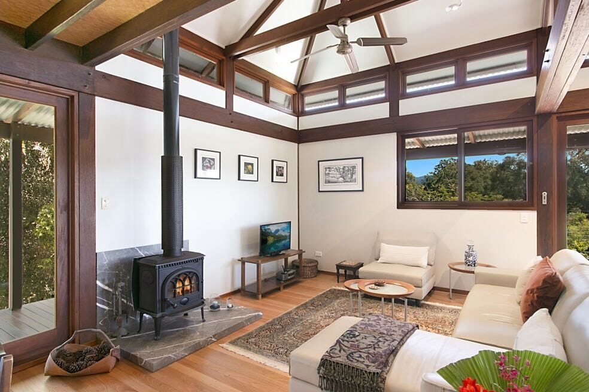
Windows stay open.
Fresh herbs find their way from the garden to the kitchen.
The fire is lit on cooler evenings.
Summer lingers a little longer beneath the stars.
As darkness settles across the valley, the world grows quiet enough to hear the forest.
Every space invites connection.
Every day feels a little less hurried.
One day you'll look around the table and realise this is where birthdays were celebrated.
Where grandchildren learnt to climb trees.
Where old friends became lifelong memories.
Where life happened.
Before long, the memories are no longer of the house itself.
They're of the life that unfolded within it.
The Land
One hundred and thirty-four living acres.
A place to care for.
A place to improve.
A place to leave better than it was found.
Over time, a relationship begins to form between the land and its custodians. Gardens flourish with care. Trees planted today become tomorrow's shade.
Wallabies emerge at dusk. Wedge-tailed eagles circle overhead. The landscape changes almost imperceptibly, rewarding those who learn to notice.
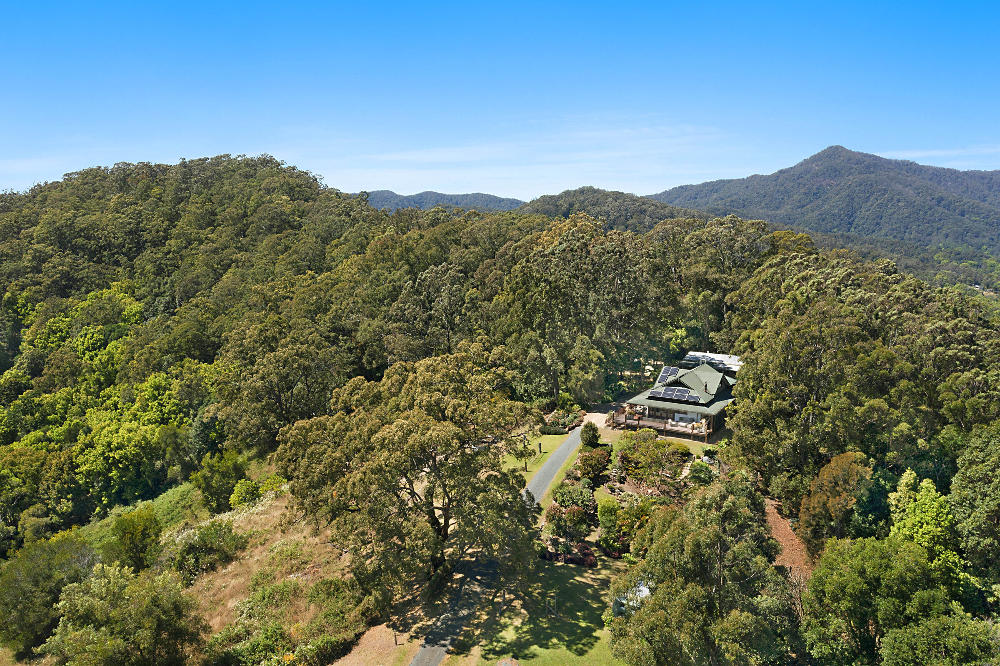
There is a deep privilege in becoming the custodian of a place like this.
Over time, something begins to shift.
Many people believe they are shaping the land.
Only to realise the land has been shaping them all along.
The Residence
Some homes sit upon the land.
Others belong to it.
The residence was designed to embrace its surroundings rather than compete with them. Walls of glass draw the landscape inside. Timber, stone and natural light create spaces that feel warm, grounded and deeply connected to the ridgeline beyond.
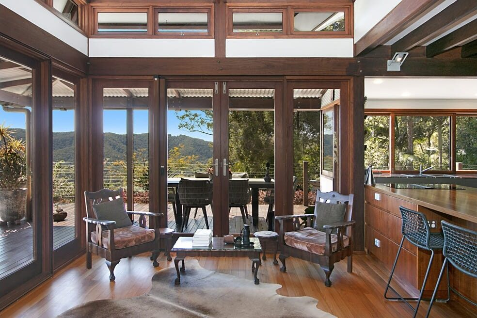
Every room offers a different perspective.
Morning light spilling through the trees.
Gardens framed by wide verandas.
The changing colours of the valley from sunrise to sunset.
The architecture never asks to be the centre of attention.
It simply provides the perfect place from which to experience everything beyond it.
The Floorplan
A home designed for connection, comfort and effortless indoor–outdoor living
A Space Apart
Some moments are best shared.
Others are best enjoyed in solitude.
Set apart from the main residence, the self-contained studio offers privacy without separation. A welcoming space for family, guests, creative pursuits or quiet reflection, offering a flexibility that enriches life at Serra Luma.
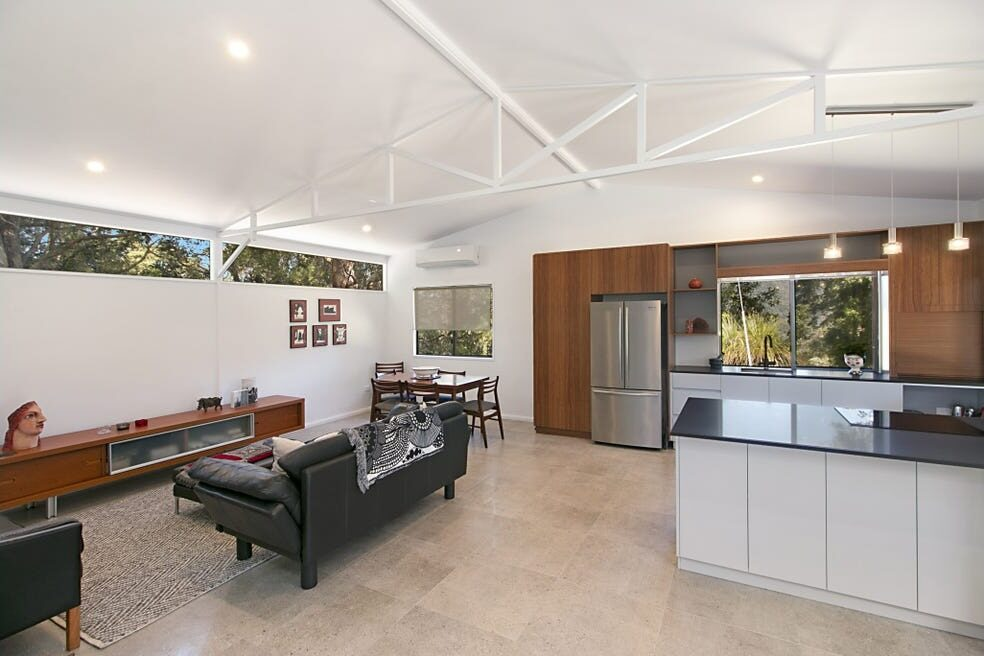
Grandparents can stay a little longer.
Friends feel immediately at home.
Creative ideas have room to breathe.
A place to welcome those you love without ever giving up your own sense of space.
Sometimes the greatest luxury is simply having a place of one's own.
Possibility
Great estates are never defined by a single purpose.
Every custodian imagines something different.
For some, Serra Luma will become a place where generations gather.
For others, a creative refuge.
A wellness retreat.
A regenerative holding.
A self-reliant sanctuary.
That is the beauty of a place like this.
Its greatest chapter has yet to be written.
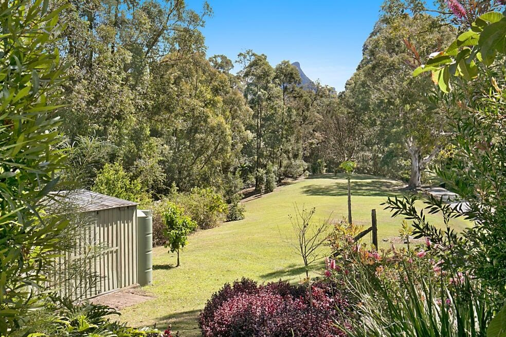
Estate Masterplan
Every great estate is best understood from above. From the ridgeline residence and self-contained studio to the permanent creek frontage, native forest, productive clearings and secluded lower plateau, the masterplan reveals the remarkable scale and composition of Serra Luma.
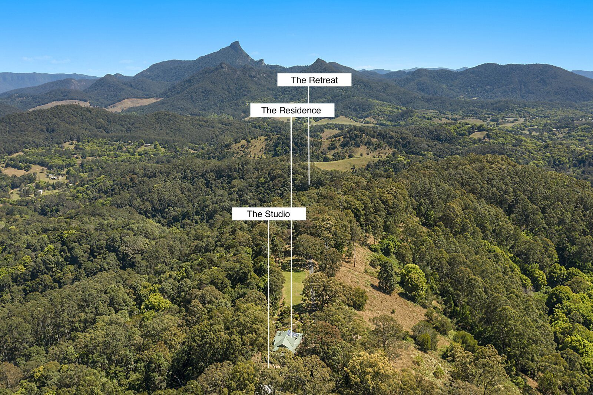
Residence·Studio·Retreat Plateau·Chowan Creek·Sealed Driveway·Creek Frontage
Boundary indication only
Some places are measured in hectares.
Others in possibility.
Beyond the Gates
One of the greatest privileges of Serra Luma is that its remarkable sense of seclusion never comes at the expense of connection.
Just minutes away, Uki remains one of the Tweed Valley's most cherished villages, home to cafés, galleries, artisan markets and a thriving creative community.
Beyond the estate lies one of Australia's richest food and nature regions. Ancient rainforest walks through Border Ranges and Springbrook National Parks. Hidden waterfalls and swimming holes. The Northern Rivers Rail Trail. Award-winning regional dining, boutique distilleries and scenic drives through fertile valleys.
Byron Bay, the Gold Coast and Gold Coast Airport all remain comfortably within easy reach.
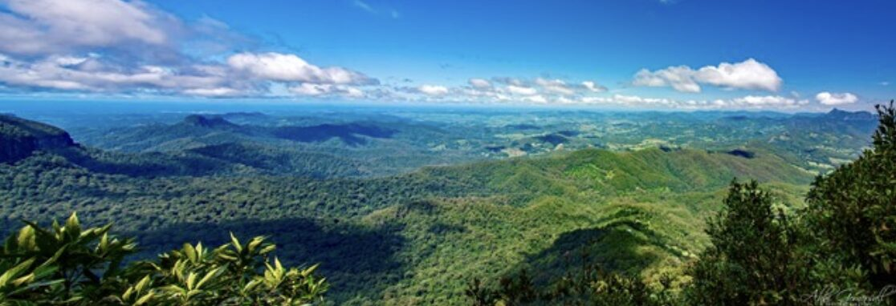
Yet every journey home ends the same way.
Crossing the bridge.
Climbing the driveway.
Watching the forest open to reveal the ridgeline once again.
Some places are wonderful to visit.
Serra Luma is the place you'll look forward to coming home to.
Estate at a Glance
Take one slow, deep breath.
Imagine this was home.
Morning light filtering across the valley.
Fresh coffee as the sun rises over the caldera.
The stillness.
The scent of the gardens after summer rain.
The last golden light settling behind Mt Warning.
The satisfaction of knowing this place is a little better because you were here.
Enquiries
Thank you for taking the time to discover Serra Luma.
We look forward to introducing the estate to its next custodians. Private inspections are available by appointment.
Michael Ivany
Important Information
This Information Memorandum has been prepared by the Vendors for the purpose of providing general information about Serra Luma. While every reasonable care has been taken in its preparation, the information contained within has been compiled in good faith from sources believed to be reliable at the time of publication. Neither the Vendors nor any person acting on their behalf makes any representation or warranty, express or implied, as to the accuracy, completeness or currency of the information contained within.
All measurements, areas, dimensions, distances, boundaries, maps, aerial imagery, photographs, plans, floorplans, illustrations and descriptions are approximate unless otherwise stated and should be independently verified by prospective purchasers. Photographs have been selected to represent the property and its surroundings at various times of the year; seasonal conditions, vegetation, water levels and views may vary over time. Travel distances and journey times are approximate only.
Any references to future development potential, alternative uses, conceptual plans, retreat opportunities or other future visions for the property are provided for illustrative purposes only. All such opportunities remain subject to the relevant planning, environmental, statutory and other approvals. Nothing contained within should be interpreted as planning advice or as a representation that any approval will be granted.
Prospective purchasers should undertake their own enquiries and obtain independent legal, financial, planning, engineering, environmental, taxation and other professional advice before making any purchasing decision. This Information Memorandum has been prepared for marketing purposes only. It does not form part of any contract of sale, representation or warranty, and should not be relied upon as a substitute for independent due diligence. The Vendors reserve the right to amend, update or withdraw any information contained within without notice.